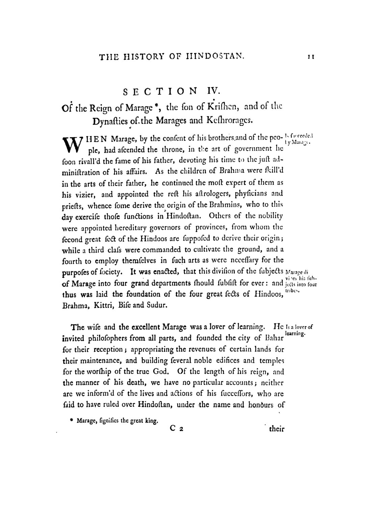
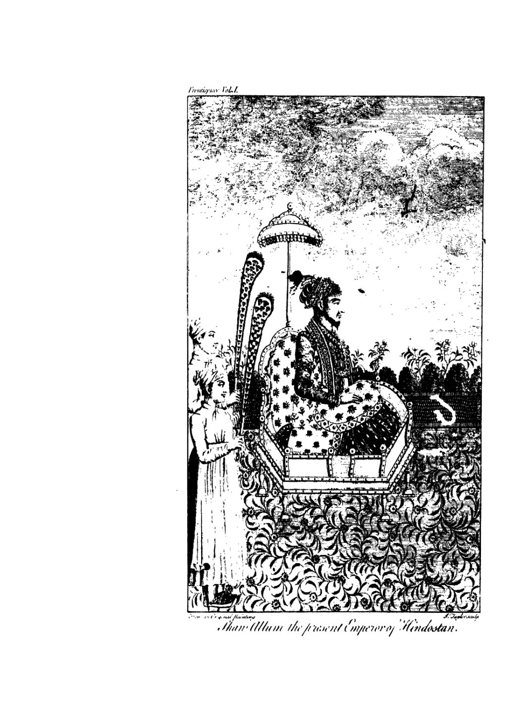
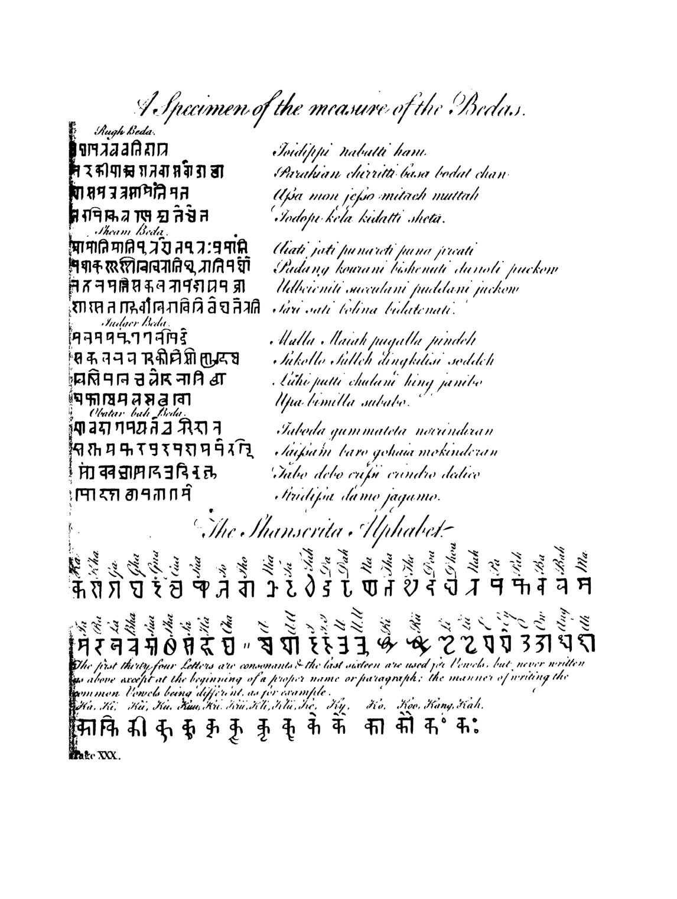
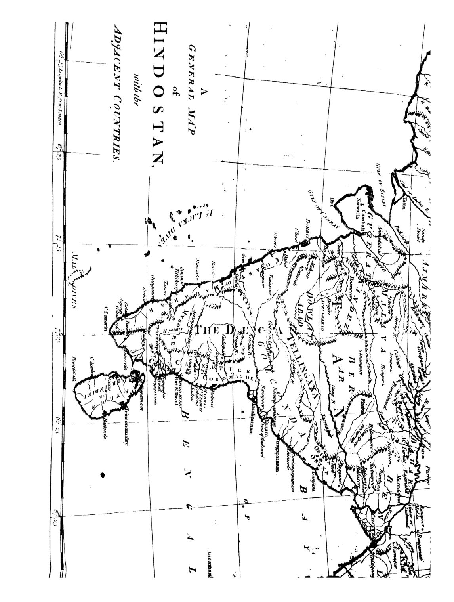

About this book
A scanned historical book, transcribed page by page by a vision model and presented as a readable, searchable site.
Explore the book
Choose a thread or chapter to start reading

The Book
The whole book.
42 chapters in this era
Sect. IV — Of the Reign of Marage*, the son of Krishen, and of thSect. V — Of the Reign of *Firose Ra*, and the Dissolution of thSect. VI — Of the Reign of *Soorage*; and the Dynasty of that NamSect. VIII — Of the Reign of *Keidar* the Brahmin.Sect. X — Of the Reign of Merage.Sect. XII — Of the Reign of Jeichund.Sect. XV — Of the Reign of Ramdeo Rhator.Sect. XVI — Of the Reign of Partab Chund.Sect. II — The Reign of Nasir ul-dien Subuctagi, the Founder of tSect. III — The Reign of Amir Ismaiel ben Nasir ul dien Subuctagi.Sect. V — The History of the Reign of Sultan Mamood, from the YeSect. V — The History of the Reign of *Jellal ul Dowla, Jemmal uSect. VI — The Reign of Shahab ul dowla Jemmal ul Muluck Sultan MSect. VII — The Reign of Abul Fatte, Chutub ul Muluck Shahab ul DoSect. VIII — The Reign of Abu Jassier Musaood ben Modood.Sect. X — The Reign of *Zein ul Muluck*, Sultan ABDUL RESHID.Sect. XI — The Reign of Jemmal ul Dowla Feroch Zaad, ben Sultan MSect. XII — The Reign of Zahir ul Dowla Sultan Ibrahim, ben MusaooSect. XIII — The Reign of Alla ul Dowla Musaood, *ben* Ibrahim *benSect. XIV — The Reign of Sultan ul Dowla Arsilla Shaw ben Musaood.Sect. XV — The Reign of Moaz ul dowla Byram Shaw, ben Musood.Sect. XVI — The Reign of Zehiri ul dowla Chusero Shaw ben Byram ShSect. XVII — The Reign of Chusero Malleck, ben Chufero Shaw.Sect. I — The Reign of Sultan Cuttub ul dien Abiek.Sect. III — The Reign of Sultan Aram Shaw, ben Sultan Cuttub ul diSect. IV — The Reign of Shumse ul dien Altumsh.Sect. V — The Reign of Ruckun ul dien Ferose Shaw ben Sultan ShuSect. VI — The Reign of Malleke Doran Sultana Rizia.Sect. VIII — The Reign of Sultan Alla ul dien Musaood Shaw, the sonSect. IX — The Reign of Sultan Nasir ul dien Mamood ben Sultan ShSect. X — The Reign of Sultan Yeas ul dien Balin.Sect. XI — The Reign of Sultan Moaz ul dien Kei Kubad, ben BugherSect. XII — The Reign of Sultan Jellal ul dien Firose of Chillige.Sect. XIII — The Reign of Alla ul dien, called Secunder Sani †.Sect. XIV — The Reign of Shab ul dien Omar ben Sultan Alla ul dienSect. XV — The Reign of Cuttub ul dien Mubarick Shaw Chil-lige.Sect. XVI — The Reign of Sultan Yeas ul dien Tuglick Shaw.Sect. XVII — The Reign of Sultan Mahummud the son of Yeas ul dien TSect. XVIII — The Reign of Sultan Moazim Mohizzib Firose Shaw, the sSect. XIX — The Reign of Yeas ul dien, Tughlick Shaw, the son of FSect. XX — The Reign of Abu Bicker Shaw, the son of Ziffer Chan, Sect. XXII — The Reign of Nasir ul dien Mamood Shaw, the son of MahA timeline
A chronological spine of the book
Notable stories
The episodes that stopped us — retold with comic panels
The Two Battles of Tarain — Defeat, Dishonour, and One Sunset Charge
Defeat, dishonour, and a sunset charge of twelve thousand steel-clad riders that opened India.
The Empress Rizia — “No Fault But That She Was a Woman”
The only woman ever to rule the Delhi Sultanate in her own right — a three-year reign that ended, Ferishta says, 'deserving a better fate.'
The Fall of Somnath — “A Breaker of Idols, Not a Seller”
Mahmud's march on a sea-girt temple-fortress, and the spoils hidden inside the god himself.
The Four Ages of the World — Time as a Wheel
Four vast ages, a world of creation, and the chance remark that all history is a wheel turning back on itself.
The Second Alexander — Gold from a Sling
A nephew who murdered his uncle, flung gold into crowds, and crowned himself 'the Second Alexander.'
The Slave Who Became King — the Rise of Sabuktigin
From the auction block to the throne — the elected slave who founded the Ghaznavid empire.
Two Kings, One City — the Empire Crumbles Before Timur
Two sultans warring inside a single capital for three years, as Tamerlane's shadow fell across the Indus.
The Tyrant and the Builder — Death of a Despot, Rise of Firoz Shah
A sultan whom all men feared and abhorred dies of a fever after overeating fish — and the empire passes to a reforming builder.
Preserved plates
The engraved relics kept whole


